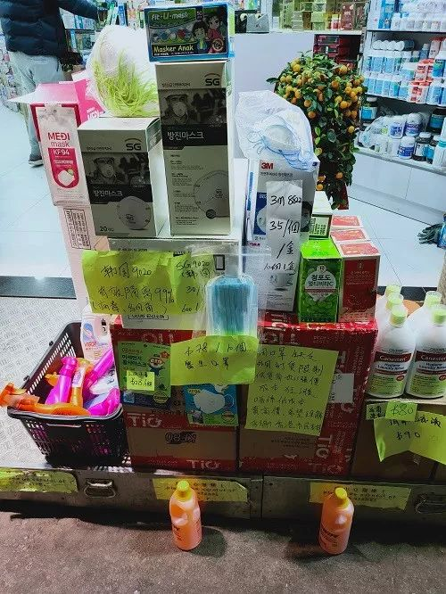

境内统筹不力境外遇阻 防疫物资为何这么难？
原文链接 备份链接 【财新网】（记者 钱童）一面是全球企业和机构各类物资支援，一面是医院领不到物资公开向社会求援，防疫物资到底在哪里？多位工厂、捐赠和采购方人士告诉财新记者，目前确实面临瓶颈：国内生产或者捐赠的物资被接管，统一调配，多有 …

全球供应链暂时失灵，去工业化产业布局导致短期内难以规模化自产，高价口罩供应充足但难以确保质量，平价口罩难买使得中低收入者面临无口罩可戴的风险
文 |《财经》特派香港记者焦建
编辑 | 苏琦
“总有不同的口罩、不同的戴口罩的方法。正规的N95标准口罩、外科手术口罩、工业用口罩、防碳疽口罩、布或纸口罩。香港人突然变了口罩专家。”
2003年非典（SARS，港称“沙士”）病毒来袭期间，一位诗人所描述的港人四处搜求口罩的场景，如今正在中国香港特区的大街小巷重现出现：位于粉岭的一家医疗用品公司择日开仓售卖各类口罩和护目镜，下午两点开始派购买凭证，上午八点便有人开始排队，目的就是为了以每盒八十元（港币，下同）的“良心价”购买市场已缺货日久的口罩。
“短缺经济”使得香港市民的关注点变成了哪家连锁店或者哪个团体“神通广大”弄到了口罩派发或者低价售卖。商铺门外的告知牌内容，亦从“今日口罩售罄”变为“今日口罩、火酒、消毒纸巾统统售罄”。即便如此，亦有人连夜排队，只为“万一有货卖”的可能性。

部分店铺贴出告示，向市民解释为何口罩价格上涨。
市面上并非全无供应。从农历春节前后至今，各式口罩已从混乱的抢购变成了“有价有市”，只不过价格逐渐由每盒二百元（五十个外科口罩）左右的价格，变成了五六百元甚至上千元。至于防护性更好的N95口罩的单价更高，十个一盒的价格为四五百元，市面上亦并不难买到。
“对不住各位香港人，韩国订货价已再加，本店只能无奈地加价卖。真心希望大家可以买到口罩，希望各位体谅。”近日香港元朗区一家仍有口罩出售的店铺如此贴出告示称。而“大家不愿意买这类口罩，一是价格实在太夸张，二是高价也无法保证是正货，大家宁愿花点时间排队在大店门口等。”有香港市民如此对《财经》记者解释称。
当地亦有大量相关报道称：因外派公司无法继续维持每日发两个口罩作为劳保用品，部分清洁工在难以买到平价口罩的时候，只能重复使用或不使用口罩。“最可怜的是基层老人家，一知道哪儿出售，便冒着寒夜，通宵排队，为求取得一筹在手，买得口罩而回；有些熬了一整夜，空手而回，含着多少辛酸泪。”

2月12日，一团体在派发口罩，领取者排起了数百米长的队伍。
在坚持“小政府、大市场”调控思维的香港，新型冠状病毒传播所导致防护用品需求大增，进而引发了各种价格乱象出现之后，“政府应该出手管控价格吗？”几乎成为中国香港特区全民皆在议论的话题。
口罩库存到底有多少？
因至今没有权威统计数字，让香港人知道到底需要多少口罩，而市场又能供应多少。不确定性导致全城抢购厕纸、大米等生活物资，香港市民对于各类物资的供应均存在信心不足。
无法供市民买到的储备口罩的数字，近日不断更新。据中国香港特区政府医管局2月12日公布的相关统计显示：现有1600万个外科口罩及220万套保护衣物，以最近一周用量计算可用一个月。中国香港特区政府行政长官林郑月娥日前亦透露：香港特区政府掌握有1200万个口罩，亦仅可以维持一个月。
据《财经》记者获悉：2003年非典疫情在港爆发期间，伊拉克战争正在进行。因担心战争中会用生化武器，供应商将大量N95口罩运送到伊拉克，香港亦曾出现过相关防护设备短缺情况。随后口罩短缺现象盛行，亦令相关学者建议香港应建立并完善用以应对重大事故的资源装备补给制度。而香港医管局方面口罩储备量的计算标准，是以2009年猪流感时的用量计算，储存3个月用量。
位于香港沙田区内的威尔斯医院，在抗击非典时曾有多名医护人员感染。据该院的《个人防护装备建议》显示：普通科门诊一般病人诊症室医护只需戴外科口罩，分流站和发烧病人诊症室则要用护目镜、N95口罩、黄色保护衣和即弃手套等；而在住院区域，普通病房做非雾化医护程序只需外科口罩，接收怀疑或确诊病人的隔离病区，则需穿面罩、N95、蓝色保护衣、即弃手套及头帽等。
在正常情况下，前线医护一天会用4至6个口罩。但因为近期消耗出于各类原因消耗大增，亦有人质疑称：近8万名员工的香港医管局，38天内用了2800万个口罩，数字惊人。为加强调控，该局已要求文职及后勤人员每日用1个口罩，亦建议部分在病房工作的员工每日用两个。部分医院亦在加强管控，以避免“出于恐慌每小时换一个口罩，甚至有意窃取的行为”。
有医护人员近日对《财经》记者表示：现在“实在太紧张的时候，有人会自行准备N95口罩等耗材。”但其也透露目前他们担心的事情有二：其一，染病后会否会因使用了自己购买的装备影响保险索赔。其二，目前新型冠状病毒仍未包含在保险范围内，“之前SARS时就是拖了很久才被纳入。”
中国香港特区政府物流署则在2月12日时表示：目前香港官方已通过各类渠道订购了超过五千三百万个口罩，已运送到港的口罩约有四百万个。至于各部门使用口罩的人员数字和口罩的每日使用量，物流署没有相关资料。该机构还重申：政府的口罩首要供应予医护人员及需接触病者的人员，内部有守则说明，主要向在工作上须与市民频繁接触、在人多地方工作、工作有需要，又或身体有状况的人员分派口罩。
目前各方普遍认为，出于全球性短缺及抢购等原因，这些口罩难以在短期内运送到港。即使全部运到，还要在确保有充足口罩储备存量下才有可能去供应市场。“七百多万人每天都想多买几个口罩，即使五千三百万个口罩都供应市场都不够。何况还只是订购。”
从“香港采购”到“香港制造”
目前香港的口罩供应分为外购及自产两类。前者分为政府采购及市场自发采购，后者则主要由惩教署工场生产，短期内有望增加一部分社会新产能。
为了进一步加强采购，中国香港特区政府物流署近日亦表示：已循多个渠道以直接采购的灵活方法向供应商取货，以求早日锁定货源，当中透过多个政府部门，包括香港经济贸易办事处及个别人士转介，接触不同国家的供应商。物流署亦透过公开招标以便涵盖更多供应商，务求尽快搜购所需抗疫物品。不过，现时各类防疫物品供应十分紧张，尤其口罩，一些地区更实施出口管制，令采购工作十分困难。
除了政府采购之外，香港的口罩市场供应链亦在很早之前就自发响应起来。但令业内人士担心的是，“多方抢筹导致口罩变成全球性的卖方市场，来货价格不可能不高。”
“春节前香港本地市场供应仍有存货。所以大家还能一两百块每盒的价格比较容易地买到口罩。之后各个商家均在积极订货，其所订购的口罩已经陆续送达香港，所以短期内香港的口罩供应会比春节前多一些。但问题在于，部分国家开始对口罩实施出口限制，货源收窄的情况下如何维持未来一段时期内的供应（哪怕是高价供应），仍是问题。”
有香港流通业内人士对《财经》记者分析，“连特首都公开呼吁了如果有采购口罩途径也可以转介政府全力购买了，大家能不紧张？而按照香港公务做事的流程讲究，在不经招标直接采购方面没有太多优势。之前采购按照价低者得的方式可以，现在全球口罩都短缺，即使跑到中东等地去收购，见到货就付现金才有可能（买到）。如果继续按照以往的思路不部分加以改革，非常时期的采购工作成效不会太高。”
目前大量业内人士担心的情况是：其一，现在网络较大的连锁店还能通过努力获得货源，中小型零售店则会比较困难。于是市场就分化为大型店铺以低价限量供应，小型店铺以高价不限量供应（但质量往往无法确保的）口罩。为打击假冒伪劣，相关部门亦在增加巡查，但效果仍有待观察；其二，随着大量航空公司削减来港航班，货物空运来港也要转机，虽然不会影响供应，但会让价格急速上涨。目前香港各个渠道购买到的口罩，基本都是通过空运“这一高价但唯一还算靠谱的方式”到港。
分析香港自产口罩方面：香港目前唯一的自产口罩来源，是特区政府惩教署罗湖惩教所工业组，工厂内有120名在囚女性作为工人进行生产。2019年时的平均每月产量110万个，产品印有CSI字样，成本价卖给政府不外售。为增加产量，该工厂目前已每日分三班次全力生产口罩。有关方面也已额外购买生产口罩机器，旨在该所内尽量多设一个口罩工厂。
随着市民人心惶惶持续抢购口罩，香港的工商业界亦在各尽其力自行设法建立生产线。此外，亦有多家香港的科技公司借出厂房设立口罩生产线。
香港立法会纺织界议员钟国斌近日也表示：其已在调整生产线生产口罩，并与香港理工大学合作将新研发可重用的布口罩在港生产。他建议政府应主动联络及为自行生产口罩的商人提供支援，如物色无尘厂房、协助进口机器和原材料的审批，加快投产进度。
香港特区政府商务及经济发展局局长邱腾华近日则表示：部分口罩生产商已投入生产，相信供应问题已有所改善。会再联同本地商会及零售业，检视物资供应的情况，希望能保证供应顺畅，呼吁市民不要过分紧张。
但到目前为止，这些据称“香港制造”的口罩仍未见在市面上流通起来。有业内人士分析：短期来看，香港过去几十年间的“去工业化”产业发展过程已经使其很难在短期内持续稳定的生产口罩，“说四五个星期是比较快的，要找地或者找厂房，要采购设备，要找工人，要建立流程。这些都是香港目前所不具备优势的领域。”
口罩价格调控之辩
为加强调控，中国香港特区政府此前宣布：将成立一个总额为100亿元的防疫抗疫基金。部分团体建议称：政府应尽快善用基金积极协助市民搜罗口罩等防疫物品，应对措施勿“慢三拍”。建议动用资金为市民搜罗口罩、漂白水等种种防疫物资，及考虑直接拨款支援患者及其家人，以及为受影响的企业提供借贷。
香港市民个人的感受并非如此宏观，他们羡慕的是澳门在1月23日宣布以成本价8澳门元发售口罩，凭身分证每人每10天到指定商店购买10个。而新加坡也从2月1日起，向137万户家庭派约520万个，每户可获4个。相较之下，d香港却至今为止都没有公布过，是否可保障老弱伤残人士都可以得获分配口罩。
香港部分人士建议：防疫抗疫是与时间竞赛，政府应尽速承担起应有角色，挽回市民信心，带领全民打赢这场疫战。在行政体系内部及香港立法会各个层面，均有相关人员提出类似建议。例如，不少团体已提倡将口罩等相关商品列入《储备商品条例》。
中国香港特区政府行政会议成员、新民党主席叶刘淑仪则透露称：香港特区政府拟规管口罩或其他必需品的价格，又估计新法例出台时间“以星期计”。她在一档电台节目中透露了一些相关信息：香港拟立新例去管制防疫物品价格，并规管入口、分销、零售、存量等，禁止有人把防疫物品囤积或抬价。政府法律团队正展开研究工作。
叶刘淑仪还表示：社会各界提出将口罩列入《储备商品条例》并不可行。以食米作例子，该条例要先成立系统向指定商户发牌经销，管制入口及存量，所以不适用于规管口罩。政府若要控制口罩及防疫用品销售及价格问题，应立新例管制入口、分销及零售，规定不准囤积及抬价。
就各界讨论的相关问题，中国香港特区政府已发出新闻稿予以否认称：在口罩短期供应仍然紧张的情况下，政府认为致力增加供应和管理口罩需求是较为切实可行的做法。不过，政府现时并没有计划透过立法就口罩的供应和价格作硬性规管，因为此举只会适得其反，不能正本归源，解决供应紧绌问题。政府与商会和零售业界代表正紧密联系，并与内地相关部门合作，促进清关工作，务求加快口罩应市。
部分议员支持这一观点，认为口罩供应不足源于货源不够，并非有人恶意囤积，又担忧政府硬性规管口罩价格，反而减低供应商向香港提供口罩的诱因，违反香港自由市场原则。而前述市场流通人士则称：要管理价格是非常困难的。因为当下的情况下很难分清价格上涨是因为来货价格上涨，运费上涨，铺租上涨，人工上涨，还是真的囤积居奇。成本算不清楚，价格怎么定？怎么保证供应链有利润还愿意去进货？
2月11日，中国香港特区政府行政长官林郑月娥表示：政府目前无计划以立法管制口罩供应、分配或价格，首要任务是要增加供应，并全力向全球搜购及全力配合增加本地生产，以“两条腿走路”。
这些表态并未平息市场短暂失灵导致口罩价格乱象所引发的讨论。亦有相关人士分析称：目前来看，情况可能仍然存在变数。此外，一份在香港知识分子当中颇具影响力的报纸也社论呼吁： 鉴于全球口罩供应紧张，邻近地区先后推出措施处理口罩问题，包括规管价格和供应，盼让民众安心。目前香港市面一盒口罩竟可炒高至近千元，早已超越所谓“合理利润”，当中显然存在囤积抬价情况。目前全球口罩短缺程度之严重，光靠所谓自由市场调节实难解决问题。当局必须摆脱官僚僵化思维、抛开自由市场意识形态包袱，敢于合理规管口罩等重要“抗疫战略物资”。

▲点击图片查看更多疫情报道
责编 | 蒋丽 lijiang@caijing.com.cn
本文为《财经》杂志原创文章，未经授权不得转载或建立镜像。如需转载，请在文末留言申请并获取授权。
原文链接 备份链接 【财新网】（记者 钱童）一面是全球企业和机构各类物资支援，一面是医院领不到物资公开向社会求援，防疫物资到底在哪里？多位工厂、捐赠和采购方人士告诉财新记者，目前确实面临瓶颈：国内生产或者捐赠的物资被接管，统一调配，多有 …
原文链接 备份链接 虽然感染确诊人数不多，但因“非典”时期香港淘大花园E座数百人染病事件，不少港人情绪紧绷，他们期待一系列尚未落地的防疫措施能切实见效 文 |《财经》特派记者 焦建 发自中国香港特区 编辑 | 苏琦 1月30日早上7点30 …
原文链接 备份链接 摄影：彭晓葵 口述：小孙 记者：殷宴 “ “我们现在尽量在寻找一个平衡点，既要阻断病毒传播，又不能影响居民正常生活” ” 新冠肺炎疫情爆发近一个月以来，从湖北到全国各地均处于应急响应状态。千家万户闭门不出的同时，基层公 …
原文链接 备份链接 摄影：彭晓葵 口述｜小孙 记者｜殷宴 新冠肺炎疫情爆发近一个月以来，从湖北到全国各地均处于应急响应状态。千家万户闭门不出的同时，基层公务员们在乡镇间奔走，克服管制带来的种种困难，把防疫工作落实到每一村、每一户，一 …
原文链接 备份链接 “ - 疫 情 之 下 - 疫情过后，你最想见的人是谁，最想做的事是什么？我想，等疫情过后，我最想见的人就是我的妻子和女儿，我想牵着你们的手，去我工作和生活的城市看一看，去吃一碗热干面，去江汉路上走一走，去看樱花盛开， …